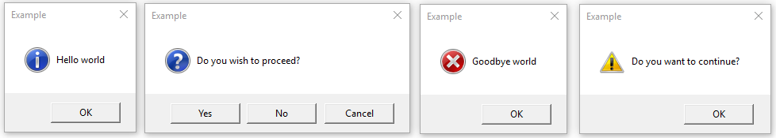

python100个关键词
这篇博客是我在大二上学期lfb老师的面向大数据的python开发课程时对老师给出的关键词进行查找总结的成果。100个关键词在下方分别列出含义（以字母顺序）。
.append
append() 方法用于在列表末尾添加新的对象。
append()方法语法：
1 | list.append(obj) |
- obj — 添加到列表末尾的对象。
该方法无返回值，但是会修改原来的列表。
以下实例展示了 append()函数的使用方法：
1 | #!/usr/bin/python |
以上实例输出结果如下：
1 | Updated List : [123, 'xyz', 'zara', 'abc', 2009] |
.py
是文件名的后缀，用于标识文件类型，.py文件通常是由python语言编写的程序脚本
.pyc
什么是pyc文件
pyc是一种二进制文件，是由Python文件经过编译后所生成的文件，它是一种byte code，Python文件变成pyc文件后，加载的速度有所提高，而且pyc还是一种跨平台的字节码，由python的虚拟机来执行的，就类似于JAVA或者.NET的虚拟机的概念。pyc的内容与python的版本是相关的，不同版本编译后的pyc文件是不同的，例如2.5版本编译的是pyc文件，而2.4版本编译的python是无法执行的
为什么要pyc文件
因为py文件是可以直接看到源码的，但是一般情况下开发出来的商业软件都不可能直接把源码泄漏出去，这样我们就需要把它编译成pyc文件来保护源码。另外pyc文件也是可以反编译的，不同版本编译后的pyc文件是不一样的，这主要是根据Python源码中所提供的opcode来决定。
.pyo
.pyo 文件
“python -O 源文件” 即可将 Python 源程序编译成 .pyo 文件，但有时仍得采用 .pyc 作后缀，才能正常运行。
.pyo 文件是相对 .pyc 而言的，优化编译后的 Python 文件。 同样，.pyo 文件也不能直接用文本编辑器进行编辑。
通过数字 IDE 控制台选项卡集成的 python -O -m compileall -l ./ 命令能把当前目录下的所有 .py 编译成 .pyo 文件，不带 -l 参数可递归进子目录。
.pyw
.pyw 文件
.pyc 文件执行时，桌面会出现类似 CMD 命令的黑色 shell 窗口，十分难看，于是 .pyw 文件就应运而生了。.pyw 文件与 .pyc 文件的执行，本质上并没什么区别，只是 .pyw 文件执行的时候不会出现类似 CMD 命令的黑色 shell 窗口。
.pyw 文件格式主要是设计用来运行 Python 纯 GUI (图形用户界面) 程序的。纯 GUI (图形用户界面) 程序的用户不需要看到类似 CMD 命令的黑色 shell 控制台窗口。当 .pyw 文件运行时，所有 stdout、stderr 输出无效，所有原 stdin 的读取只会得到 EOF。
值得一提的是，开发纯 GUI (图形用户界面) 程序时，可暂时把 .pyw 改成 .py，以便运行时调出控制台窗口，看到所有错误信息，方便修改、调试。
注意：采用 PyQt、PySide 等 GUI (图形用户界面) 开发框架开发的程序，源文件仍可采用 .py，无需单独使用 .pyw。
.sort()
以字母顺序对列表进行排序：
cars = [‘Porsche’, ‘BMW’, ‘Volvo’]
cars.sort()
print(cars)
[‘BMW’, ‘Porsche’, ‘Volvo’]
默认情况下，sort() 方法对列表进行升序排序。
您还可以让函数来决定排序标准。
1 | list.sort(reverse=True|False, key=myFunc) |
reverse=True 将对列表进行降序排序。默认是 reverse=False。.start()
accept
在服务器端，socket()返回的套接字用于监听（listen）和接受（accept），这个套接字不能用于与客户端之间发送和接收数据。
accept()接受一个客户端的连接请求，并返回一个新的套接字，不同于以上socket()返回的用于监听和接受客户端的连接请求的套接字；与此客户端通信是通过这个新的套接字上发送和接收数据来完成的。
每个连接进来的客户端，都会通过accept函数返回一个不同的客户端的socket对象和属于客户端的套接字
假设一共有3个客户端连接到服务器端，那么在服务器端就移动有4个套接字，第1个是socket()返回的，用于监听的套接字；其余3个是分别调用3次accept()返回的不同的套接字。
如果已经有客户端连接到服务器端，不再需要监听和接受更多的客户端连接的时候，可以关闭由socket()返回的套接字，而不会影响与客户端之间的通信。
anacoda
Anaconda是一个可用于科学计算的Python发行版。这是什么意思呢？Python是一门编程语言，使用这门语言的时候，在写代码这件事情之外，还有很多其他的配套工作，比如运行脚本、下载各种需要用到的库、管理环境等。Anaconda就把这些功能全都集成好了，省去很多琐碎的工作。简单来说，Anaconda帮你管理了在使用Python时用到的包和环境。
argv
可以看到argv用法就是获取在命令行执行脚本时python命令后跟的所有参数
argv其实就是一个列表，里边的项为用户输入的参数，关键就是要明白这参数是从程序外部输入的，而非代码本身的什么地方，要想看到它的效果就应该将程序保存了，从外部来运行程序并给出参数。
bind
1.调用规则：窗体对象.bind(事件类型，回调函数)
2.
t=Label(root, text=’标签’)
t.bind(
cgi
什么是CGI
CGI 目前由NCSA维护，NCSA定义CGI如下：
CGI(Common Gateway Interface),通用网关接口,它是一段程序,运行在服务器上如：HTTP服务器，提供同客户端HTML页面的接口。

为了更好的了解 CGI 是如何工作的，我们可以从在网页上点击一个链接或 URL 的流程：
1、使用你的浏览器访问 URL 并连接到 HTTP web 服务器。
2、Web 服务器接收到请求信息后会解析 URL，并查找访问的文件在服务器上是否存在，如果存在返回文件的内容，否则返回错误信息。
3、浏览器从服务器上接收信息，并显示接收的文件或者错误信息。
CGI 程序可以是 Python 脚本，PERL 脚本，SHELL 脚本，C 或者 C++ 程序等。
chdir
概述
os.chdir() 方法用于改变当前工作目录到指定的路径。
语法
chdir()方法语法格式如下：
os.chdir(path)
参数
path — 要切换到的新路径。
返回值
如果允许访问返回 True , 否则返回False。
实例
以下实例演示了 chdir() 方法的使用：
!/usr/bin/python
-- coding: UTF-8 --
import os, sys
path = “/tmp”
查看当前工作目录
retval = os.getcwd()
print “当前工作目录为 %s” % retval
3修改当前工作目录
os.chdir( path )
查看修改后的工作目录
retval = os.getcwd()
print “目录修改成功 %s” % retval
执行以上程序输出结果为：
当前工作目录为 /www
目录修改成功 /tmp
close
概述
close() 方法用于关闭一个已打开的文件。关闭后的文件不能再进行读写操作， 否则会触发 ValueError 错误。 close() 方法允许调用多次。
当 file 对象，被引用到操作另外一个文件时，Python 会自动关闭之前的 file 对象。 使用 close() 方法关闭文件是一个好的习惯。
语法
close() 方法语法如下：
fileObject.close();
参数
无
返回值
该方法没有返回值。
connect
MySQLdb模块是python连接mysql数据库的一个模块，在操作mysql数据库是经常使用，在连接数据库时connect是最常用的一种方法，这个方法有好多参数，总结了一下，主要有一下几种：
connect()方法用于连接数据库，返回一个数据库连接对象。如果要连接一个位于www.gyyx.com服务器上名为mysql的MySQL数据库，连接串可以这样写：
db = MySQLdb.connect(host=”www.gyyx.com”,user=”user”,passwd=”xxx”,db=”mysql” )
connect()的参数列表如下：
host，连接的数据库服务器主机名，默认为本地主机(localhost)。
user，连接数据库的用户名，默认为当前用户。
passwd，连接密码，没有默认值。
db，连接的数据库名，没有默认值。
conv，将文字映射到Python类型的字典。默认为MySQLdb.converters.conversions
cursorclass，cursor()使用的种类，默认值为MySQLdb.cursors.Cursor。
compress，启用协议压缩功能。
named_pipe，在windows中，与一个命名管道相连接。
init_command，一旦连接建立，就为数据库服务器指定一条语句来运行。
read_default_file，使用指定的MySQL配置文件。
read_default_group，读取的默认组。
unix_socket，在unix中，连接使用的套接字，默认使用TCP。
port，指定数据库服务器的连接端口，默认是3306。
CPython
CPython(使用C语言)是Python的一种实现（implementation）, 不是解释器 （interpreter）。
其余的实现还有PyPy(使用Python)、Jython(使用Java);
几个概念必须要澄清：
- 实现：来确保语言执行的全流程，包含编译与解释运行，当然具体要不要编译、怎么执行就是各个实现自己的事情。
- 编译（Compile）: 将一种代码转换（transform）为另一种代码的过程。不是只有转为机器码才称为编译，你自定义一种编译器把Python转为Python也叫编译。
- 解释执行（Interpreter)： 由类似虚拟机的运行时负责执行代码，当然了前提是解释能懂的代码，比如JVM和PVM(CPython使用)能看懂的 字节码（byte code）. 与编译执行的区别在 每次解释执行前需要重新读取字节码，以适应动态语言的变化。
- 编译执行：区别于解释执行，编译执行把代码先编译为CPU可以直接运行的代码执行。
dict[k]=v
修改字典中键为k的键值对的值为v
dir()
描述
dir() 函数不带参数时，返回当前范围内的变量、方法和定义的类型列表；带参数时，返回参数的属性、方法列表。如果参数包含方法dir()，该方法将被调用。如果参数不包含dir()，该方法将最大限度地收集参数信息。
语法
dir 语法：
dir([object])
参数说明：
object — 对象、变量、类型。
返回值
返回模块的属性列表。
实例
以下实例展示了 dir 的使用方法：
dir() # 获得当前模块的属性列表
[‘builtins‘, ‘doc‘, ‘name‘, ‘package‘, ‘arr’, ‘myslice’]
dir([ ]) # 查看列表的方法
[‘add‘, ‘class‘, ‘contains‘, ‘delattr‘, ‘delitem‘, ‘delslice‘, ‘doc‘, ‘eq‘, ‘format‘, ‘ge‘, ‘getattribute‘, ‘getitem‘, ‘getslice‘, ‘gt‘, ‘hash‘, ‘iadd‘, ‘imul‘, ‘init‘, ‘iter‘, ‘le‘, ‘len‘, ‘lt‘, ‘mul‘, ‘ne‘, ‘new‘, ‘reduce‘, ‘reduce_ex‘, ‘repr‘, ‘reversed‘, ‘rmul‘, ‘setattr‘, ‘setitem‘, ‘setslice‘, ‘sizeof‘, ‘str‘, ‘subclasshook‘, ‘append’, ‘count’, ‘extend’, ‘index’, ‘insert’, ‘pop’, ‘remove’, ‘reverse’, ‘sort’]
dir(sys)
当你给dir()提供一个模块名字时，它返回在那个模块中定义的名字的列表。在这里是sys模块的属性列表
Djangordocker
当把环境从一个服务器迁移到另一个服务器，当你新买了电脑，会遇上要重新安装一系列的软件，比如JDK、Tomcat、maven、redis等，而安装完之后每一次都需要再去配置环境，但是这些都是重复性的工作，有什么办法可以解决呢？
玩过云服务器的听说过有镜像一说，将所有的软件和需要的配置都打包好做成镜像，下次需要的时候只需要安装镜像就可以。
类似的，Docker就是解决这种问题的，将所有的软件程序都放在docker仓库中，我们只需要在电脑上下载docker即可，不需要再去进行繁琐的安装和配置了，只需要几个命令就可以将我们的环境搭建好，这就是docker。
总结：
Docker是一个开源的应用容器引擎；是一个轻量级容器技术；Docker支持将软件编译成一个镜像；然后在镜像中各种软件做好配置，将镜像发布出去，其他使用者可以直接使用这个镜像；运行中的这个镜像称为容器，容器启动是非常快速的。
Django 是一个由 Python 编写的一个开放源代码的 Web 应用框架。
使用 Django，只要很少的代码，Python 的程序开发人员就可以轻松地完成一个正式网站所需要的大部分内容，并进一步开发出全功能的 Web 服务 Django 本身基于 MVC 模型，即 Model（模型）+ View（视图）+ Controller（控制器）设计模式，MVC 模式使后续对程序的修改和扩展简化，并且使程序某一部分的重复利用成为可能。
eval
描述
eval() 函数用来执行一个字符串表达式，并返回表达式的值。
语法
以下是 eval() 方法的语法:
eval(expression[, globals[, locals]])
参数
expression — 表达式。
globals — 变量作用域，全局命名空间，如果被提供，则必须是一个字典对象。
locals — 变量作用域，局部命名空间，如果被提供，可以是任何映射对象。
返回值
返回表达式计算结果。
实例
以下展示了使用 eval() 方法的实例：
x = 7
eval( ‘3 * x’ )
21
eval(‘pow(2,2)’)
4
eval(‘2 + 2’)
4
n=81
eval(“n + 4”)
85
因此对于有经验的侵入者来说，他可能会有一系列强大的手段，使得eval可以解释和调用这些方法，从而带来更大的破坏。此外，eval()函数也给程序的调试带来一定困难，要查看eval()里面表达式具体的执行过程很难。因此在实际应用过程中如果使用对象不是信任源，应该尽量避免使用eval，在需要使用eval的地方可用安全性更好的ast.literal_eval替代。
exec(‘print(“Hello”)’)
描述
exec 执行储存在字符串或文件中的 Python 语句，相比于 eval，exec可以执行更复杂的 Python 代码。
语法
以下是 exec 的语法:
exec(object[, globals[, locals]])
参数
object：必选参数，表示需要被指定的 Python 代码。它必须是字符串或 code 对象。如果 object 是一个字符串，该字符串会先被解析为一组 Python 语句，然后再执行（除非发生语法错误）。如果 object 是一个 code 对象，那么它只是被简单的执行。
globals：可选参数，表示全局命名空间（存放全局变量），如果被提供，则必须是一个字典对象。
locals：可选参数，表示当前局部命名空间（存放局部变量），如果被提供，可以是任何映射对象。如果该参数被忽略，那么它将会取与 globals 相同的值。
返回值
exec 返回值永远为 None。
实例
以下展示了使用 exec 的实例：
实例 1
exec(‘print(“Hello World”)’)
Hello Worldexec(“print (‘runoob.com’)”)
runoob.comexec (“””for i in range(5):
… print (“iter time: %d” % i)
… “””)
iter time: 0
iter time: 1
iter time: 2
iter time: 3
iter time: 4
实例 2
x = 10
expr = “””
z = 30
sum = x + y + z
print(sum)
“””
def func():
y = 20
exec(expr)
exec(expr, {‘x’: 1, ‘y’: 2})
exec(expr, {‘x’: 1, ‘y’: 2}, {‘y’: 3, ‘z’: 4})
func()
输出结果：
60
33
34
Flask
Flask是一个使用Python编写的轻量级Web应用框架。基于Werkzeug WSGI工具箱和Jinja2模板引擎。Flask使用BSD授权。
Flask被称为“微框架”，因为它使用简单的核心，用扩展增加其他功能。Flask没有默认使用的数据库、窗体验证工具。然而，Flask保留了扩增的弹性，可以用Flask-extension[3]加入这些功能：ORM、窗体验证工具、文件上传、各种开放式身份验证技术。
from
from…import 语句
Python 的 from 语句让你从模块中导入一个指定的部分到当前命名空间中。语法如下：
from modname import name1[, name2[, … nameN]]
例如，要导入模块 fib 的 fibonacci 函数，使用如下语句：
from fib import fibonacci
这个声明不会把整个 fib 模块导入到当前的命名空间中，它只会将 fib 里的 fibonacci 单个引入到执行这个声明的模块的全局符号表。
from…import* 语句
把一个模块的所有内容全都导入到当前的命名空间也是可行的，只需使用如下声明：
from modname import *
这提供了一个简单的方法来导入一个模块中的所有项目。然而这种声明不该被过多地使用。
例如我们想一次性引入 math 模块中所有的东西，语句如下：
from math import *
GIL
全局解释器锁（英语：Global Interpreter Lock，缩写GIL），是计算机程序设计语言解释器用于同步线程的一种机制，它使得任何时刻仅有一个线程在执行。[1]即便在多核心处理器上，使用 GIL 的解释器也只允许同一时间执行一个线程。常见的使用 GIL 的解释器有CPython与Ruby MRI。
Python的GIL
CPython的线程是操作系统的原生线程。在Linux上为pthread，在Windows上为Win thread，完全由操作系统调度线程的执行。一个Python解释器进程内有一个主线程，以及多个用户程序的执行线程。即便使用多核心CPU平台，由于GIL的存在，也将禁止多线程的并行执行。[2]
Python解释器进程内的多线程是以协作多任务方式执行。当一个线程遇到I/O任务时，将释放GIL。计算密集型（CPU-bound）的线程在执行大约100次解释器的计步（ticks）时，将释放GIL。计步（ticks）可粗略看作Python虚拟机的指令。计步实际上与时间片长度无关。可以通过sys.setcheckinterval()设置计步长度。
在单核CPU上，数百次的间隔检查才会导致一次线程切换。在多核CPU上，存在严重的线程颠簸（thrashing）。
Python 3.2开始使用新的GIL。新的GIL实现中用一个固定的超时时间来指示当前的线程放弃全局锁。在当前线程保持这个锁，且其他线程请求这个锁时，当前线程就会在5毫秒后被强制释放该锁。
可以创建独立的进程来实现并行化。Python 2.6引进了多进程包multiprocessing。或者将关键组件用C/C++编写为Python扩展，通过ctypes使Python程序直接调用C语言编译的动态链接库的导出函数。
global
Python中定义函数时，若想在函数内部对函数外的变量进行操作，就需要在函数内部声明其为global。
例子1
x = 1
def func():
x = 2
func()
print(x)
1
2
3
4
5
6
7
输出：1
在func函数中并未在x前面加global，所以func函数无法将x赋为2，无法改变x的值
例子2
x = 1
def func():
global x
x = 2
func()
print(x)
1
2
3
4
5
6
7
8
输出：2
加了global，则可以在函数内部对函数外的对象进行操作了，也可以改变它的值了
GPIO
GPIO 代表通用输入/输出。它是用于将微控制器连接到其他电子设备的标准接口。
help()
help() 函数用于查看函数或模块用途的详细说明。
语法
help 语法：
help([object])
参数说明：
object — 对象；
返回值
返回对象帮助信息。
实例
以下实例展示了 help 的使用方法：
help(‘sys’) # 查看 sys 模块的帮助
……显示帮助信息……help(‘str’) # 查看 str 数据类型的帮助
……显示帮助信息……a = [1,2,3]
help(a) # 查看列表 list 帮助信息
……显示帮助信息……help(a.append) # 显示list的append方法的帮助
……显示帮助信息……
http
超文本传输协议（英语：HyperText Transfer Protocol，缩写：HTTP）是一种用于分布式、协作式和超媒体信息系统的应用层协议[1]。HTTP是万维网的数据通信的基础。
设计HTTP最初的目的是为了提供一种发布和接收HTML页面的方法。通过HTTP或者HTTPS协议请求的资源由统一资源标识符（Uniform Resource Identifiers，URI）来标识。
id()
描述
id() 函数返回对象的唯一标识符，标识符是一个整数。
CPython 中 id() 函数用于获取对象的内存地址。
语法
id 语法：
id([object])
参数说明：
object — 对象。
返回值
返回对象的内存地址。
实例
以下实例展示了 id 的使用方法：
a = ‘runoob’
id(a)
4531887632
b = 1
id(b)
140588731085608
import
import 语句
模块的引入
模块定义好后，我们可以使用 import 语句来引入模块，语法如下：
import module1[, module2[,… moduleN]]
比如要引用模块 math，就可以在文件最开始的地方用 import math 来引入。在调用 math 模块中的函数时，必须这样引用：
模块名.函数名
当解释器遇到 import 语句，如果模块在当前的搜索路径就会被导入。
搜索路径是一个解释器会先进行搜索的所有目录的列表。如想要导入模块 support.py，需要把命令放在脚本的顶端：
test.py 文件代码：
!/usr/bin/python
-- coding: UTF-8 --
导入模块
import support
现在可以调用模块里包含的函数了
support.print_func(“Runoob”)
以上实例输出结果：
Hello : Runoob
一个模块只会被导入一次，不管你执行了多少次import。这样可以防止导入模块被一遍又一遍地执行。
import as
假如你嫌datetime这个包名称太长，想要给它取个别名，以后每次用到它的时候都用它的别名代替它，这时就需要用到import…as，例子如下：
import datetime as dt
print(dt.datetime.now())
input
Python3.x 中 input() 函数接受一个标准输入数据，返回为 string 类型。
注意：在 Python3.x 中 raw_input() 和 input() 进行了整合，去除了 raw_input( )，仅保留了input( )函数，其接收任意任性输入，将所有输入默认为字符串处理，并返回字符串类型。
函数语法
input([prompt])
参数说明：
prompt: 提示信息 仅仅是个提示信息
实例
input() 需要输入 python 表达式
a = input(“input:”)
input:123 # 输入整数
type(a)
# 字符串
a = input(“input:”)
input:runoob # 正确，字符串表达式
type(a)
# 字符串
input() 接收多个值
实例!/usr/bin/python
输入三角形的三边长
a,b,c = (input(“请输入三角形三边的长：”).split())
a= int(a)
b= int(b)
c= int(c)
计算三角形的半周长p
p=(a+b+c)/2
计算三角形的面积s
s=(p(p-a)(p-b)(p-c))*0.5
输出三角形的面积
print(“三角形面积为：”,format(s,’.2f’))
以上实例执行输出结果为：
请输入三角形三边的长：3 4 5
三角形面积为： 6.00
install
安装包
pip install SomePackage # 最新版本
pip install SomePackage==1.0.4 # 指定版本
pip install ‘SomePackage>=1.0.4’ # 最小版本
int()
描述
int() 函数用于将一个字符串或数字转换为整型。
语法
以下是 int() 方法的语法:
class int(x, base=10)
参数
x — 字符串或数字。
base — 进制数，默认十进制。
返回值
返回整型数据。
实例
以下展示了使用 int() 方法的实例：
int() # 不传入参数时，得到结果0
0
int(3)
3
int(3.6)
3
int(‘12’,16) # 如果是带参数base的话，12要以字符串的形式进行输入，12 为 16进制
18
int(‘0xa’,16)
10
int(‘10’,8)
8
iso-9660
ISO 9660，也被一些硬件和软件供应商称作CDFS（光盘文件系统），是一个由国际标准化组织（ISO）为光盘介质发布的文件系统。其目标是能够在不同的操作系统如Windows、Mac OS以及类Unix系统上交换数据。
ISO 9660源于High Sierra文件系统。High Sierra通过使用一种分层树（共八层）文件系统，以一种密集的、顺序的布局来组织文件信息，类似于UNIX和FAT。为了增强跨平台兼容性，它定义了一个常用文件属性（目录或原始文件以及记录时间）和名称属性（文件名、扩展名、版本）的最小子集，并且使用一个单独的系统区域来兼容未来的扩展属性。
High Sierra在1986年12月被Ecma国际采用（作了一些改动）而成为了国际标准，即ECMA-119[1]，并提交给国际标准化组织而成为ISO 9660:1988。目前，ISO 9660文件系统正在被行业广泛使用。
Kademlia
Kademlia是一种通过分散式杂凑表实现的协议算法，它是由Petar Maymounkov与David Mazières为非集中式P2P计算机网络而设计的。Kademlia规定了网络的结构，也规定了通过节点查询进行信息交换的方式。Kademlia网络节点之间使用UDP进行通讯。参与通讯的所有节点形成一张虚拟网（或者叫做覆盖网）。这些节点通过一组数字（或称为节点ID）来进行身份标识。节点ID不仅可以用来做身份标识，还可以用来进行值定位（值通常是文件的散列或者关键词）。其实，节点ID与文件散列直接对应，它所表示的那个节点存储着哪儿能够获取文件和资源的相关信息。当我们在网络中搜索某些值（即通常搜索存储文件散列或关键词的节点）的时候，Kademlia算法需要知道与这些值相关的键，然后分步在网络中开始搜索。每一步都会找到一些节点，这些节点的ID与键更为接近，如果有节点直接返回搜索的值或者再也无法找到与键更为接近的节点ID的时候搜索便会停止。这种搜索值的方法是非常高效的：与其他的分散式杂凑表的实现类似，在一个包含n个节点的系统的值的搜索中，Kademlia仅访问O(log(n))个节点。非集中式网络结构还有更大的优势，那就是它能够显著增强抵御拒绝服务攻击的能力。即使网络中的一整批节点遭受泛洪攻击，也不会对网络的可用性造成很大的影响，通过绕过这些漏洞（被攻击的节点）来重新编织一张网络，网络的可用性就可以得到恢复。
Kubernetes
Kubernetes（常简称为K8s）是用于自动部署、扩展和管理“容器化（containerized）应用程序”的开源系统。[3]该系统由Google设计并捐赠给Cloud Native Computing Foundation（今属Linux基金会）来使用。
它旨在提供“跨主机集群的自动部署、扩展以及运行应用程序容器的平台”。[4] 它支持一系列容器工具，包括Docker等。
len()
描述
Python len() 方法返回对象（字符、列表、元组等）长度或项目个数。
语法
len()方法语法：
len( s )
参数
s — 对象。
返回值
返回对象长度。
实例
以下实例展示了 len() 的使用方法：
实例
!/usr/bin/env python
coding=utf-8
str = “runoob”
print( len(str) ) # 字符串长度
l = [1,2,3,4,5]
print( len(l) ) # 列表元素个数
执行以上代码，输出结果为：
6
5
list
序列是Python中最基本的数据结构。序列中的每个元素都分配一个数字 - 它的位置，或索引，第一个索引是0，第二个索引是1，依此类推。
Python有6个序列的内置类型，但最常见的是列表和元组。
序列都可以进行的操作包括索引，切片，加，乘，检查成员。
此外，Python已经内置确定序列的长度以及确定最大和最小的元素的方法。
列表是最常用的Python数据类型，它可以作为一个方括号内的逗号分隔值出现。
创建一个列表，只要把逗号分隔的不同的数据项使用方括号括起来即可。如下所示：
list1 = [‘physics’, ‘chemistry’, 1997, 2000]
list2 = [1, 2, 3, 4, 5 ]
list3 = [“a”, “b”, “c”, “d”]
列表的数据项不需要具有相同的类型
Python列表函数&方法
Python包含以下函数:
序号 函数
1 cmp(list1, list2)
比较两个列表的元素
2 len(list)
列表元素个数
3 max(list)
返回列表元素最大值
4 min(list)
返回列表元素最小值
5 list(seq)
将元组转换为列表
Python包含以下方法:
序号 方法
1 list.append(obj)
在列表末尾添加新的对象
2 list.count(obj)
统计某个元素在列表中出现的次数
3 list.extend(seq)
在列表末尾一次性追加另一个序列中的多个值（用新列表扩展原来的列表）
4 list.index(obj)
从列表中找出某个值第一个匹配项的索引位置
5 list.insert(index, obj)
将对象插入列表
6 list.pop([index=-1])
移除列表中的一个元素（默认最后一个元素），并且返回该元素的值
7 list.remove(obj)
移除列表中某个值的第一个匹配项
8 list.reverse()
反向列表中元素
9 list.sort(cmp=None, key=None, reverse=False)
对原列表进行排序
listen
Socket 对象(内建)方法
s.listen() 开始 TCP 监听。backlog 指定在拒绝连接之前，操作系统可以挂起的最大连接数量。该值至少为 1，大部分应用程序设为 5 就可以了。
main()
main函数，又称主函数，是程序执行的起点，main是相对来说的
matplotlib
Matplotlib 是 Python 的绘图库。 它可与 NumPy 一起使用，提供了一种有效的 MatLab 开源替代方案。 它也可以和图形工具包一起使用，如 PyQt 和 wxPython。
numpy
NumPy(Numerical Python) 是 Python 语言的一个扩展程序库，支持大量的维度数组与矩阵运算，此外也针对数组运算提供大量的数学函数库。
NumPy 的前身 Numeric 最早是由 Jim Hugunin 与其它协作者共同开发，2005 年，Travis Oliphant 在 Numeric 中结合了另一个同性质的程序库 Numarray 的特色，并加入了其它扩展而开发了 NumPy。NumPy 为开放源代码并且由许多协作者共同维护开发。
NumPy 是一个运行速度非常快的数学库，主要用于数组计算，包含：
一个强大的N维数组对象 ndarray
广播功能函数
整合 C/C++/Fortran 代码的工具
线性代数、傅里叶变换、随机数生成等功能
NumPy 应用
NumPy 通常与 SciPy（Scientific Python）和 Matplotlib（绘图库）一起使用， 这种组合广泛用于替代 MatLab，是一个强大的科学计算环境，有助于我们通过 Python 学习数据科学或者机器学习。
SciPy 是一个开源的 Python 算法库和数学工具包。
SciPy 包含的模块有最优化、线性代数、积分、插值、特殊函数、快速傅里叶变换、信号处理和图像处理、常微分方程求解和其他科学与工程中常用的计算。
Matplotlib 是 Python 编程语言及其数值数学扩展包 NumPy 的可视化操作界面。它为利用通用的图形用户界面工具包，如 Tkinter, wxPython, Qt 或 GTK+ 向应用程序嵌入式绘图提供了应用程序接口（API）。
open
python open() 函数用于打开一个文件，创建一个 file 对象，相关的方法才可以调用它进行读写。
更多文件操作可参考：Python 文件I/O。
函数语法
open(name[, mode[, buffering]])
参数说明：
name : 一个包含了你要访问的文件名称的字符串值。
mode : mode 决定了打开文件的模式：只读，写入，追加等。所有可取值见如下的完全列表。这个参数是非强制的，默认文件访问模式为只读(r)。
buffering : 如果 buffering 的值被设为 0，就不会有寄存。如果 buffering 的值取 1，访问文件时会寄存行。如果将 buffering 的值设为大于 1 的整数，表明了这就是的寄存区的缓冲大小。如果取负值，寄存区的缓冲大小则为系统默认。
不同模式打开文件的完全列表：
模式 描述
t 文本模式 (默认)。
x 写模式，新建一个文件，如果该文件已存在则会报错。
b 二进制模式。
/反斜杠取消标识 + 打开一个文件进行更新(可读可写)。
U 通用换行模式（不推荐）。
r 以只读方式打开文件。文件的指针将会放在文件的开头。这是默认模式。
rb 以二进制格式打开一个文件用于只读。文件指针将会放在文件的开头。这是默认模式。一般用于非文本文件如图片等。
r+ 打开一个文件用于读写。文件指针将会放在文件的开头。
rb+ 以二进制格式打开一个文件用于读写。文件指针将会放在文件的开头。一般用于非文本文件如图片等。
w 打开一个文件只用于写入。如果该文件已存在则打开文件，并从开头开始编辑，即原有内容会被删除。如果该文件不存在，创建新文件。
wb 以二进制格式打开一个文件只用于写入。如果该文件已存在则打开文件，并从开头开始编辑，即原有内容会被删除。如果该文件不存在，创建新文件。一般用于非文本文件如图片等。
w+ 打开一个文件用于读写。如果该文件已存在则打开文件，并从开头开始编辑，即原有内容会被删除。如果该文件不存在，创建新文件。
wb+ 以二进制格式打开一个文件用于读写。如果该文件已存在则打开文件，并从开头开始编辑，即原有内容会被删除。如果该文件不存在，创建新文件。一般用于非文本文件如图片等。
a 打开一个文件用于追加。如果该文件已存在，文件指针将会放在文件的结尾。也就是说，新的内容将会被写入到已有内容之后。如果该文件不存在，创建新文件进行写入。
ab 以二进制格式打开一个文件用于追加。如果该文件已存在，文件指针将会放在文件的结尾。也就是说，新的内容将会被写入到已有内容之后。如果该文件不存在，创建新文件进行写入。
a+ 打开一个文件用于读写。如果该文件已存在，文件指针将会放在文件的结尾。文件打开时会是追加模式。如果该文件不存在，创建新文件用于读写。
ab+ 以二进制格式打开一个文件用于追加。如果该文件已存在，文件指针将会放在文件的结尾。如果该文件不存在，创建新文件用于读写。
file 对象方法
file.read([size])：size 未指定则返回整个文件，如果文件大小 >2 倍内存则有问题，f.read()读到文件尾时返回””(空字串)。
file.readline()：返回一行。
file.readlines([size]) ：返回包含size行的列表, size 未指定则返回全部行。
for line in f: print line ：通过迭代器访问。
f.write(“hello\n”)：如果要写入字符串以外的数据,先将他转换为字符串。
f.tell()：返回一个整数,表示当前文件指针的位置(就是到文件头的字节数)。
f.seek(偏移量,[起始位置])：用来移动文件指针。
偏移量: 单位为字节，可正可负
起始位置: 0 - 文件头, 默认值; 1 - 当前位置; 2 - 文件尾
f.close() 关闭文件
更多内容参考：Python File(文件) 方法
实例
测试文件 test.txt，内容如下：
RUNOOB1
RUNOOB2
f = open(‘test.txt’)
f.read()
‘RUNOOB1\nRUNOOB2\n’
openpyxl
简介
openpyxl是一个Python库，用于读取/写入Excel 2010 xlsx/xlsm/xltx/xltm文件。
它是由于缺乏现有的库而诞生的，可以从Python本地读取/写入Office Open XML格式。
OpenStack
OpenStack是一个自由、开源的云计算平台。它主要作为基础设施即服务（IaaS）部署在公用云和私有云中，提供虚拟服务器和其他资源给用户使用。[2]该软件平台由相互关联的组件组成，控制着整个数据中心内不同的厂商的处理器、存储和网络资源的硬件池。用户可以通过基于网络的仪表盘、命令行工具或RESTful网络服务来管理。
OpenStack始于2010年，是Rackspace和美国国家航空航天局的合作项目。截至2012年，它由2012年9月成立的非营利组织OpenStack基金会管理，旨在促进OpenStack软件及其社区。[3][4]到2018年，已经有500多家公司加入了该项目。[5][6][7][8][9][10][11][12][13][14][15]在2020年，该基金会宣布它将在2021年更名为Open Infrastructure Foundation（开放基础设施基金会）。
os
os就是“operating system”的缩写，顾名思义，os模块提供的就是各种 Python 程序与操作系统进行交互的接口。通过使用os模块，一方面可以方便地与操作系统进行交互，另一方面页可以极大增强代码的可移植性。如果该模块中相关功能出错，会抛出OSError异常或其子类异常
os.chdir
见chdir
os.pipe
概述
os.pipe() 方法用于创建一个管道, 返回一对文件描述符(r, w) 分别为读和写。
语法
pipe()方法语法格式如下：
os.pipe()
参数
无
返回值
返回文件描述符对。
实例
以下实例演示了 pipe() 方法的使用：
!/usr/bin/python
-- coding: UTF-8 --
import os, sys
print “The child will write text to a pipe and “
print “the parent will read the text written by child…”
file descriptors r, w for reading and writing
r, w = os.pipe()
processid = os.fork()
if processid:
# This is the parent process
# Closes file descriptor w
os.close(w)
r = os.fdopen(r)
print "Parent reading"
str = r.read()
print "text =", str
sys.exit(0)
else:
# This is the child process
os.close(r)
w = os.fdopen(w, 'w')
print "Child writing"
w.write("Text written by child...")
w.close()
print "Child closing"
sys.exit(0)
执行以上程序输出结果为：
The child will write text to a pipe and
the parent will read the text written by child…
Parent reading
Child writing
Child closing
text = Text written by child…
Pandas
Pandas 是 Python 语言的一个扩展程序库，用于数据分析。
Pandas 是一个开放源码、BSD 许可的库，提供高性能、易于使用的数据结构和数据分析工具。
Pandas 名字衍生自术语 “panel data”（面板数据）和 “Python data analysis”（Python 数据分析）。
Pandas 一个强大的分析结构化数据的工具集，基础是 Numpy（提供高性能的矩阵运算）。
Pandas 可以从各种文件格式比如 CSV、JSON、SQL、Microsoft Excel 导入数据。
Pandas 可以对各种数据进行运算操作，比如归并、再成形、选择，还有数据清洗和数据加工特征。
Pandas 广泛应用在学术、金融、统计学等各个数据分析领域。
pass
Python pass 是空语句，是为了保持程序结构的完整性。
pass 不做任何事情，一般用做占位语句。
Python 语言 pass 语句语法格式如下：
pass
PEP 572
见考点梳理
pip install
见install
pip list
列出已安装的软件包，包括可编辑的。
包以不区分大小写的排序顺序列出。
print() 方法用于打印输出，最常见的一个函数。
在 Python3.3 版增加了 flush 关键字参数。
print 在 Python3.x 是一个函数，但在 Python2.x 版本不是一个函数，只是一个关键字。
语法
以下是 print() 方法的语法:
print(*objects, sep=’ ‘, end=’\n’, file=sys.stdout, flush=False)
参数
objects — 复数，表示可以一次输出多个对象。输出多个对象时，需要用 , 分隔。
sep — 用来间隔多个对象，默认值是一个空格。
end — 用来设定以什么结尾。默认值是换行符 \n，我们可以换成其他字符串。
file — 要写入的文件对象。
flush — 输出是否被缓存通常决定于 file，但如果 flush 关键字参数为 True，流会被强制刷新。
返回值
无。
pycharm
PyCharm是一个用于计算机编程的集成开发环境(IDE)，主要用于Python语言开发，由捷克公司JetBrains开发[1]，提供代码分析、图形化调试器，集成测试器、集成版本控制系统，并支持使用Django进行网页开发。
PyCharm是一个跨平台开发环境，拥有Microsoft Windows、macOS和Linux版本。社区版在Apache许可证下发布[2] ，另外还有专业版在专用许可证下发布，其拥有许多额外功能。
pyc文件格式
见pyc
pyplot
Pyplot 是 Matplotlib 的子库，提供了和 MATLAB 类似的绘图 API。
Pyplot 是常用的绘图模块，能很方便让用户绘制 2D 图表。
Pyplot 包含一系列绘图函数的相关函数，每个函数会对当前的图像进行一些修改，例如：给图像加上标记，生新的图像，在图像中产生新的绘图区域等等。
使用的时候，我们可以使用 import 导入 pyplot 库，并设置一个别名 plt：
import matplotlib.pyplot as plt
这样我们就可以使用 plt 来引用 Pyplot 包的方法。
pypy
CPython：是用C语言实现Pyhon，是目前应用最广泛的解释器。最新的语言特性都是在这个上面先实现，基本包含了所有第三方库支持，但是CPython有几个缺陷，一是全局锁使Python在多线程效能上表现不佳，二是CPython无法支持JIT（即时编译），导致其执行速度不及Java和Javascipt等语言。于是出现了Pypy。
Pypy：是用Python自身实现的解释器。针对CPython的缺点进行了各方面的改良，性能得到很大的提升。最重要的一点就是Pypy集成了JIT。但是，Pypy无法支持官方的C/Python API，导致无法使用例如Numpy，Scipy等重要的第三方库。这也是现在Pypy没有被广泛使用的原因吧。
而PyPy与CPython的不同在于，别的一些python实现如CPython是使用解释执行的方式，这样的实现方式在性能上是很凄惨的。而PyPy使用了JIT(即时编译)技术，在性能上得到了提升。
PyQt
PyQt是Python语言的GUI编程解决方案之一。可以用来代替Python内置的Tkinter。其它替代者还有PyGTK、wxPython等。与Qt一样，PyQt是一个自由软件。PyQt是PyKDE的基础。
PyQt的开发者是英国的“Riverbank Computing”公司。与4.5版本之前的Qt一样，它提供了GPL与商业协议两种授权方式，因此它可以免费地用于自由软件的开发。不过目前尚不提供LGPL授权方式。PyQt可以运行于Microsoft Windows、Mac OS X、Linux以及Unix的多数变种上。
2009年8月，Qt的开发公司诺基亚发布PySide，提供与PyQt类似的功能，但提供了LGPL授权。主要原因是“Riverbank Computing”不愿以LGPL授权发布PyQt。[2]
自4.5版本以后[3]，PyQt同时支持Python 2.x与Python 3.x。但是在API方面有所区别，最主要的是运行在Python 3.x下的PyQt不使用QString，而是str。另外，之前为了避开Python 2.x关键词限制的exec()、print()两个函数现在重命名为exec()，print()。
QPython
QPython是一个脚本引擎，他整合了Python解释器、Console、编辑器和SL4A库。可以让你在Android设备上运行Python语言开发的程序。它就是Android上的Python！此外，它提供了开发工具能让你在Android设备上方便地开发Python项目。
random.choice
见复习题 三门问题
random.choices
random.choices(population,weights=None,*,cum_weights=None,k=1)
Python3.6版本新增。
population：集群。
weights：相对权重。
cum_weights：累加权重。
k：选取次数。
作用：从集群中随机选取k次数据，返回一个列表，可以设置权重。
注意每次选取都不会影响原序列，每一次选取都是基于原序列。
re:Python 正则表达式
正则表达式是一个特殊的字符序列，它能帮助你方便的检查一个字符串是否与某种模式匹配。
Python 自1.5版本起增加了re 模块，它提供 Perl 风格的正则表达式模式。
re 模块使 Python 语言拥有全部的正则表达式功能。
compile 函数根据一个模式字符串和可选的标志参数生成一个正则表达式对象。该对象拥有一系列方法用于正则表达式匹配和替换。
re 模块也提供了与这些方法功能完全一致的函数，这些函数使用一个模式字符串做为它们的第一个参数。
本章节主要介绍Python中常用的正则表达式处理函数。re.findall
readlines
概述
readlines() 方法用于读取所有行(直到结束符 EOF)并返回列表，该列表可以由 Python 的 for… in … 结构进行处理。
如果碰到结束符 EOF 则返回空字符串。
语法
readlines() 方法语法如下：
fileObject.readlines( );
参数
无。
返回值
返回列表，包含所有的行。
实例
以下实例演示了 readlines() 方法的使用：
文件 runoob.txt 的内容如下：
1:www.runoob.com
2:www.runoob.com
3:www.runoob.com
4:www.runoob.com
5:www.runoob.com
循环读取文件的内容：
实例
!/usr/bin/python
-- coding: UTF-8 --
打开文件
fo = open(“runoob.txt”, “r”)
print “文件名为: “, fo.name
for line in fo.readlines(): #依次读取每行
line = line.strip() #去掉每行头尾空白
print “读取的数据为: %s” % (line)
关闭文件
fo.close()
以上实例输出结果为：
文件名为: runoob.txt
读取的数据为: 1:www.runoob.com
读取的数据为: 2:www.runoob.com
读取的数据为: 3:www.runoob.com
读取的数据为: 4:www.runoob.com
读取的数据为: 5:www.runoob.com
recv
见socket
request
Requests是一常用的http请求库，它使用python语言编写，可以方便地发送http请求，以及方便地处理响应结果。
return
return 语句就是将结果返回到调用的地方，并把程序控制权一起返回。
send
用途：使用方法send()重置生成器的生成序列。
send方法有一个参数，该参数指定的是上一次被挂起的yield语句的返回值。（大雾）
sendall
socket.send 是一种低级方法，基本上只是 C/syscall 方法 send(3)/send(2) .它可以发送比您请求的更少的字节，但返回发送的字节数。
socket.sendall 是一种高级 Python 专用方法，它发送您传递的整个缓冲区或引发异常。它通过调用 socket.send 来做到这一点。直到所有内容都已发送或发生错误。
sendall()是对send()的包装，完成了用户需要手动完成的部分，它会自动判断每次发送的内容量，然后从总内容中删除已发送的部分，将剩下的继续传给send()进行发送；
set
集合（set）是一个无序的不重复元素序列。
可以使用大括号 { } 或者 set() 函数创建集合，注意：创建一个空集合必须用 set() 而不是 { }，因为 { } 是用来创建一个空字典。
创建格式：
1 | parame = {value01,value02,...} |
集合内置方法完整列表
| 方法 | 描述 |
|---|---|
| add() | 为集合添加元素 |
| clear() | 移除集合中的所有元素 |
| copy() | 拷贝一个集合 |
| difference() | 返回多个集合的差集 |
| difference_update() | 移除集合中的元素，该元素在指定的集合也存在。 |
| discard() | 删除集合中指定的元素 |
| intersection() | 返回集合的交集 |
| intersection_update() | 返回集合的交集。 |
| isdisjoint() | 判断两个集合是否包含相同的元素，如果没有返回 True，否则返回 False。 |
| issubset() | 判断指定集合是否为该方法参数集合的子集。 |
| issuperset() | 判断该方法的参数集合是否为指定集合的子集 |
| pop() | 随机移除元素 |
| remove() | 移除指定元素 |
| symmetric_difference() | 返回两个集合中不重复的元素集合。 |
| symmetric_difference_update() | 移除当前集合中在另外一个指定集合相同的元素，并将另外一个指定集合中不同的元素插入到当前集合中。 |
| union() | 返回两个集合的并集 |
| update() | 给集合添加元素 |
SIGINT
signal —- 设置异步事件处理程序
该模块提供了在 Python 中使用信号处理程序的机制。
一般规则
signal.signal() 函数允许定义在接收到信号时执行的自定义处理程序。少量的默认处理程序已经设置： SIGPIPE 被忽略（因此管道和套接字上的写入错误可以报告为普通的 Python 异常）以及如果父进程没有更改 SIGINT ，则其会被翻译成 KeyboardInterrupt 异常。
一旦设置，特定信号的处理程序将保持安装，直到它被显式重置（ Python 模拟 BSD 样式接口而不管底层实现），但 SIGCHLD 的处理程序除外，它遵循底层实现。
sleep()
Python time sleep()方法
描述
Python time sleep() 函数推迟调用线程的运行，可通过参数secs指秒数，表示进程挂起的时间。
语法
sleep()方法语法：
time.sleep(t)
参数
t — 推迟执行的秒数。
返回值
该函数没有返回值。
实例
以下实例展示了 sleep() 函数的使用方法：
实例
!/usr/bin/python
import time
print “Start : %s” % time.ctime()
time.sleep( 5 )
print “End : %s” % time.ctime()
以上实例输出结果为：
Start : Tue Feb 17 10:19:18 2013
End : Tue Feb 17 10:19:23 2013
socket
Python 网络编程
Python 提供了两个级别访问的网络服务：
低级别的网络服务支持基本的 Socket，它提供了标准的 BSD Sockets API，可以访问底层操作系统 Socket 接口的全部方法。
高级别的网络服务模块 SocketServer， 它提供了服务器中心类，可以简化网络服务器的开发。
什么是 Socket?
Socket又称”套接字”，应用程序通常通过”套接字”向网络发出请求或者应答网络请求，使主机间或者一台计算机上的进程间可以通讯。
socket()函数
Python 中，我们用 socket（）函数来创建套接字，语法格式如下：
socket.socket([family[, type[, proto]]])
参数
family: 套接字家族可以使 AF_UNIX 或者 AF_INET。
type: 套接字类型可以根据是面向连接的还是非连接分为 SOCK_STREAM 或 SOCK_DGRAM。
protocol: 一般不填默认为 0。
Socket 对象(内建)方法
函数 描述
服务器端套接字
s.bind() 绑定地址（host,port）到套接字， 在 AF_INET下，以元组（host,port）的形式表示地址。
s.listen() 开始 TCP 监听。backlog 指定在拒绝连接之前，操作系统可以挂起的最大连接数量。该值至少为 1，大部分应用程序设为 5 就可以了。
s.accept() 被动接受TCP客户端连接,(阻塞式)等待连接的到来
客户端套接字
s.connect() 主动初始化TCP服务器连接，。一般address的格式为元组（hostname,port），如果连接出错，返回socket.error错误。
s.connect_ex() connect()函数的扩展版本,出错时返回出错码,而不是抛出异常
公共用途的套接字函数
s.recv() 接收 TCP 数据，数据以字符串形式返回，bufsize 指定要接收的最大数据量。flag 提供有关消息的其他信息，通常可以忽略。
s.send() 发送 TCP 数据，将 string 中的数据发送到连接的套接字。返回值是要发送的字节数量，该数量可能小于 string 的字节大小。
s.sendall() 完整发送 TCP 数据。将 string 中的数据发送到连接的套接字，但在返回之前会尝试发送所有数据。成功返回 None，失败则抛出异常。
s.recvfrom() 接收 UDP 数据，与 recv() 类似，但返回值是（data,address）。其中 data 是包含接收数据的字符串，address 是发送数据的套接字地址。
s.sendto() 发送 UDP 数据，将数据发送到套接字，address 是形式为（ipaddr，port）的元组，指定远程地址。返回值是发送的字节数。
s.close() 关闭套接字
s.getpeername() 返回连接套接字的远程地址。返回值通常是元组（ipaddr,port）。
s.getsockname() 返回套接字自己的地址。通常是一个元组(ipaddr,port)
s.setsockopt(level,optname,value) 设置给定套接字选项的值。
s.getsockopt(level,optname[.buflen]) 返回套接字选项的值。
s.settimeout(timeout) 设置套接字操作的超时期，timeout是一个浮点数，单位是秒。值为None表示没有超时期。一般，超时期应该在刚创建套接字时设置，因为它们可能用于连接的操作（如connect()）
s.gettimeout() 返回当前超时期的值，单位是秒，如果没有设置超时期，则返回None。
s.fileno() 返回套接字的文件描述符。
s.setblocking(flag) 如果flag为0，则将套接字设为非阻塞模式，否则将套接字设为阻塞模式（默认值）。非阻塞模式下，如果调用recv()没有发现任何数据，或send()调用无法立即发送数据，那么将引起socket.error异常。
s.makefile() 创建一个与该套接字相关连的文件
简单实例
服务端
我们使用 socket 模块的 socket 函数来创建一个 socket 对象。socket 对象可以通过调用其他函数来设置一个 socket 服务。
现在我们可以通过调用 bind(hostname, port) 函数来指定服务的 port(端口)。
接着，我们调用 socket 对象的 accept 方法。该方法等待客户端的连接，并返回 connection 对象，表示已连接到客户端。
完整代码如下：
实例
!/usr/bin/python
import socket # 导入 socket 模块
s = socket.socket() # 创建 socket 对象
host = socket.gethostname() # 获取本地主机名
port = 12345 # 设置端口
s.bind((host, port)) # 绑定端口
s.listen(5) # 等待客户端连接
while True:
c,addr = s.accept() # 建立客户端连接
print ‘连接地址：’, addr
c.send(‘欢迎访问菜鸟教程！’)
c.close() # 关闭连接
客户端
接下来我们写一个简单的客户端实例连接到以上创建的服务。端口号为 12345。
socket.connect(hosname, port ) 方法打开一个 TCP 连接到主机为 hostname 端口为 port 的服务商。连接后我们就可以从服务端获取数据，记住，操作完成后需要关闭连接。
完整代码如下：
实例
!/usr/bin/python
import socket # 导入 socket 模块
s = socket.socket() # 创建 socket 对象
host = socket.gethostname() # 获取本地主机名
port = 12345 # 设置端口号
s.connect((host, port))
print s.recv(1024)
s.close()
现在我们打开两个终端，第一个终端执行 server.py 文件：
$ python server.py
第二个终端执行 client.py 文件：
$ python client.py
欢迎访问菜鸟教程！
这时我们再打开第一个终端，就会看到有以下信息输出：
连接地址： (‘192.168.0.118’, 62461)
Python Internet 模块
以下列出了 Python 网络编程的一些重要模块：
协议 功能用处 端口号 Python 模块
HTTP 网页访问 80 httplib, urllib, xmlrpclib
NNTP 阅读和张贴新闻文章，俗称为”帖子” 119 nntplib
FTP 文件传输 20 ftplib, urllib
SMTP 发送邮件 25 smtplib
POP3 接收邮件 110 poplib
IMAP4 获取邮件 143 imaplib
Telnet 命令行 23 telnetlib
Gopher 信息查找 70 gopherlib, urllib
sort()
描述
sort() 函数用于对原列表进行排序，如果指定参数，则使用比较函数指定的比较函数。
语法
sort()方法语法：
list.sort(cmp=None, key=None, reverse=False)
参数
cmp — 可选参数, 如果指定了该参数会使用该参数的方法进行排序。
key — 主要是用来进行比较的元素，只有一个参数，具体的函数的参数就是取自于可迭代对象中，指定可迭代对象中的一个元素来进行排序。
reverse — 排序规则，reverse = True 降序， reverse = False 升序（默认）。
返回值
该方法没有返回值，但是会对列表的对象进行排序。
split
见复习题3
sqlite3.connect
sqlite3.connect(database [,timeout ,other optional arguments])
该 API 打开一个到 SQLite 数据库文件 database 的链接。您可以使用 “:memory:” 来在 RAM 中打开一个到 database 的数据库连接，而不是在磁盘上打开。如果数据库成功打开，则返回一个连接对象。
当一个数据库被多个连接访问，且其中一个修改了数据库，此时 SQLite 数据库被锁定，直到事务提交。timeout 参数表示连接等待锁定的持续时间，直到发生异常断开连接。timeout 参数默认是 5.0（5 秒）。
如果给定的数据库名称 filename 不存在，则该调用将创建一个数据库。如果您不想在当前目录中创建数据库，那么您可以指定带有路径的文件名，这样您就能在任意地方创建数据库。
什么是 SQLite？
SQLite是一个进程内的库，实现了自给自足的、无服务器的、零配置的、事务性的 SQL 数据库引擎。它是一个零配置的数据库，这意味着与其他数据库不一样，您不需要在系统中配置。
就像其他数据库，SQLite 引擎不是一个独立的进程，可以按应用程序需求进行静态或动态连接。SQLite 直接访问其存储文件。
string[:]
[ : ] 截取字符串中的一部分，遵循左闭右开原则，str[0:2] 是不包含第 3 个字符的。
strip()
见复习题
sys
sys —- 系统相关的参数和函数
该模块提供了一些变量和函数。这些变量可能被解释器使用，也可能由解释器提供。这些函数会影响解释器。本模块总是可用的。
sys.argv[1]
「argv」是「argument variable」参数变量的简写形式，一般在命令行调用的时候由系统传递给程序。这个变量其实是一个List列表，argv[0] 一般是“被调用的脚本文件名或全路径”，这个与操作系统有关，argv[1]和以后就是传入的系统命令参数。比如脚本执行语句是：>>>> python using sys.args.py “whoami”，那么我们使用sys.argv[1]获取的就是“whoami”这个参数；
sys.argv[]是用来获取命令行参数的，sys.argv[0]获取的内容是“脚本自身名称”，所以参数从1开始，获取的是执行命令内容
thread
Python3 多线程
多线程类似于同时执行多个不同程序，多线程运行有如下优点：
使用线程可以把占据长时间的程序中的任务放到后台去处理。
用户界面可以更加吸引人，比如用户点击了一个按钮去触发某些事件的处理，可以弹出一个进度条来显示处理的进度。
程序的运行速度可能加快。
在一些等待的任务实现上如用户输入、文件读写和网络收发数据等，线程就比较有用了。在这种情况下我们可以释放一些珍贵的资源如内存占用等等。
每个独立的线程有一个程序运行的入口、顺序执行序列和程序的出口。但是线程不能够独立执行，必须依存在应用程序中，由应用程序提供多个线程执行控制。
每个线程都有他自己的一组CPU寄存器，称为线程的上下文，该上下文反映了线程上次运行该线程的CPU寄存器的状态。
指令指针和堆栈指针寄存器是线程上下文中两个最重要的寄存器，线程总是在进程得到上下文中运行的，这些地址都用于标志拥有线程的进程地址空间中的内存。
线程可以被抢占（中断）。
在其他线程正在运行时，线程可以暂时搁置（也称为睡眠） — 这就是线程的退让。
线程可以分为:
内核线程：由操作系统内核创建和撤销。
用户线程：不需要内核支持而在用户程序中实现的线程。
Python3 线程中常用的两个模块为：
_thread
threading(推荐使用)
thread 模块已被废弃。用户可以使用 threading 模块代替。所以，在 Python3 中不能再使用”thread” 模块。为了兼容性，Python3 将 thread 重命名为 “thread”。
threading
见上条
tika
Apache Tika - 一个内容分析工具包
Apache Tika™ 工具包可从一千多种不同的文件类型（例如 PPT、XLS 和 PDF）中检测和提取元数据和文本。所有这些文件类型都可以通过一个界面进行解析，使 Tika 可用于搜索引擎索引、内容分析、翻译等。
tika是什么？
Apache Tika用于文件类型检测和从各种格式的文件内容提取的库。
在内部，Tika使用现有的各种文件解析器和文档类型的检测技术来检测和提取数据。
使用Tika，人们可以开发出通用型检测器和内容提取到的不同类型的文件，如电子表格，文本文件，图像，PDF文件甚至多媒体输入格式，在一定程度上提取结构化文本以及元数据。
Tika提供用于解析不同文件格式的一个通用API。它采用83个现有的专业解析器库，为每个文档类型。
所有这些解析器库是根据一个叫做Parser接口单一接口封装。
time
Python 提供了一个 time 和 calendar 模块可以用于格式化日期和时间。
时间间隔是以秒为单位的浮点小数。
每个时间戳都以自从 1970 年 1 月 1 日午夜（历元）经过了多长时间来表示。
Python 的 time 模块下有很多函数可以转换常见日期格式。如函数 time.time() 用于获取当前时间戳
Tkinter
Python GUI编程(Tkinter)
Python 提供了多个图形开发界面的库，几个常用 Python GUI 库如下：
Tkinter： Tkinter 模块(Tk 接口)是 Python 的标准 Tk GUI 工具包的接口 .Tk 和 Tkinter 可以在大多数的 Unix 平台下使用,同样可以应用在 Windows 和 Macintosh 系统里。Tk8.0 的后续版本可以实现本地窗口风格,并良好地运行在绝大多数平台中。
wxPython：wxPython 是一款开源软件，是 Python 语言的一套优秀的 GUI 图形库，允许 Python 程序员很方便的创建完整的、功能健全的 GUI 用户界面。
Jython：Jython 程序可以和 Java 无缝集成。除了一些标准模块，Jython 使用 Java 的模块。Jython 几乎拥有标准的Python 中不依赖于 C 语言的全部模块。比如，Jython 的用户界面将使用 Swing，AWT或者 SWT。Jython 可以被动态或静态地编译成 Java 字节码。
Tkinter 编程
Tkinter 是 Python 的标准 GUI 库。Python 使用 Tkinter 可以快速的创建 GUI 应用程序。
由于 Tkinter 是内置到 python 的安装包中、只要安装好 Python 之后就能 import Tkinter 库、而且 IDLE 也是用 Tkinter 编写而成、对于简单的图形界面 Tkinter 还是能应付自如。
注意：Python3.x 版本使用的库名为 tkinter,即首写字母 T 为小写。
import tkinter
创建一个GUI程序
1、导入 Tkinter 模块
2、创建控件
3、指定这个控件的 master， 即这个控件属于哪一个
4、告诉 GM(geometry manager) 有一个控件产生了。
实例(Python3.x)
!/usr/bin/python3
import tkinter
top = tkinter.Tk()
进入消息循环
top.mainloop()
实例(Python2.x)
!/usr/bin/python
-- coding: UTF-8 --
import Tkinter
top = Tkinter.Tk()
进入消息循环
top.mainloop()
以上代码执行结果如下图:
tkwindow
实例
!/usr/bin/python
-- coding: UTF-8 --
Python2.x 导入方法
from Tkinter import * # 导入 Tkinter 库
Python3.x 导入方法
from tkinter import *
root = Tk() # 创建窗口对象的背景色
# 创建两个列表
li = [‘C’,’python’,’php’,’html’,’SQL’,’java’]
movie = [‘CSS’,’jQuery’,’Bootstrap’]
listb = Listbox(root) # 创建两个列表组件
listb2 = Listbox(root)
for item in li: # 第一个小部件插入数据
listb.insert(0,item)
for item in movie: # 第二个小部件插入数据
listb2.insert(0,item)
listb.pack() # 将小部件放置到主窗口中
listb2.pack()
root.mainloop() # 进入消息循环
以上代码执行结果如下图:
Tkinter 组件
Tkinter的提供各种控件，如按钮，标签和文本框，一个GUI应用程序中使用。这些控件通常被称为控件或者部件。
目前有15种Tkinter的部件。我们提出这些部件以及一个简短的介绍，在下面的表:
控件 描述
Button 按钮控件；在程序中显示按钮。
Canvas 画布控件；显示图形元素如线条或文本
Checkbutton 多选框控件；用于在程序中提供多项选择框
Entry 输入控件；用于显示简单的文本内容
Frame 框架控件；在屏幕上显示一个矩形区域，多用来作为容器
Label 标签控件；可以显示文本和位图
Listbox 列表框控件；在Listbox窗口小部件是用来显示一个字符串列表给用户
Menubutton 菜单按钮控件，用于显示菜单项。
Menu 菜单控件；显示菜单栏,下拉菜单和弹出菜单
Message 消息控件；用来显示多行文本，与label比较类似
Radiobutton 单选按钮控件；显示一个单选的按钮状态
Scale 范围控件；显示一个数值刻度，为输出限定范围的数字区间
Scrollbar 滚动条控件，当内容超过可视化区域时使用，如列表框。.
Text 文本控件；用于显示多行文本
Toplevel 容器控件；用来提供一个单独的对话框，和Frame比较类似
Spinbox 输入控件；与Entry类似，但是可以指定输入范围值
PanedWindow PanedWindow是一个窗口布局管理的插件，可以包含一个或者多个子控件。
LabelFrame labelframe 是一个简单的容器控件。常用与复杂的窗口布局。
tkMessageBox 用于显示你应用程序的消息框。
标准属性
标准属性也就是所有控件的共同属性，如大小，字体和颜色等等。
属性 描述
Dimension 控件大小；
Color 控件颜色；
Font 控件字体；
Anchor 锚点；
Relief 控件样式；
Bitmap 位图；
Cursor 光标；
几何管理
Tkinter控件有特定的几何状态管理方法，管理整个控件区域组织，以下是Tkinter公开的几何管理类：包、网格、位置
几何方法 描述
pack() 包装；
grid() 网格；
place() 位置；
tkinter.messagebox
tkinter.messagebox 模块提供了一个模板基类以及多个常用配置的便捷方法。 消息框为模式窗口并将基于用户的选择返回 (True, False, OK, None, Yes, No) 的一个子集。 常用消息框风格和布局包括但不限于:

class
tkinter.messagebox.``Message(master=None, **options)创建一个默认信息消息框。
信息消息框
tkinter.messagebox.``showinfo(title=None, message=None, **options)
警告消息框
tkinter.messagebox.``showwarning(title=None, message=None, **options)tkinter.messagebox.``showerror(title=None, message=None, **options)
疑问消息框
tkinter.messagebox.``askquestion(title=None, message=None, **options)tkinter.messagebox.``askokcancel(title=None, message=None, **options)tkinter.messagebox.``askretrycancel(title=None, message=None, **options)tkinter.messagebox.``askyesno(title=None, message=None, **options)tkinter.messagebox.``askyesnocancel(title=None, message=None, **options)¶
unicode
Unicode，联盟官方中文名称为统一码[1]，是计算机科学领域的业界标准。它整理、编码了世界上大部分的文字系统，使得电脑可以用更为简单的方式来呈现和处理文字。
Unicode伴随着通用字符集的标准而发展，同时也以书本的形式[2]对外发表。Unicode至今仍在不断增修，每个新版本都加入更多新的字符。目前最新的版本为2021年9月公布的14.0.0[3]，已经收录超过14万个字符（第十万个字符在2005年获采纳）。Unicode除了视觉上的字形、编码方法、标准的字符编码资料外，还包含了字符特性（如大小写字母）、书写方向、拆分标准等特性的资料库。
Unicode的发展由非营利机构统一码联盟负责，该机构致力于让Unicode方案取代既有的字符编码方案。因为既有的方案往往空间非常有限，亦不适用于多语环境。
Unicode备受认可，并广泛地应用于电脑软件的国际化与本地化过程。有很多新科技，如可扩展置标语言（Extensible Markup Language，简称：XML）、Java编程语言以及现代的操作系统，都采用Unicode编码。Unicode也被ISO作为国际标准采纳于通用字符集，即 ISO/IEC 10646，且Unicode兼容ISO/IEC 10646且完整对应各个版本标准。
uninstall
卸载模块 pip uninstall PackageName
urllib
urllib 是一个收集了多个涉及 URL 的模块的包：
urllib.request 打开和读取 URL
urllib.error 包含 urllib.request 抛出的异常
urllib.parse 用于解析 URL
urllib.robotparser 用于解析 robots.txt 文件
utf-8
UTF-8（8-bit Unicode Transformation Format）是一种针对Unicode的可变长度字符编码，也是一种前缀码。它可以用一至四个字节对Unicode字符集中的所有有效编码点进行编码，属于Unicode标准的一部分，最初由肯·汤普逊和罗布·派克提出。[2][3]由于较小值的编码点一般使用频率较高，直接使用Unicode编码效率低下，大量浪费内存空间。UTF-8就是为了解决向后兼容ASCII码而设计，Unicode中前128个字符，使用与ASCII码相同的二进制值的单个字节进行编码，而且字面与ASCII码的字面一一对应，这使得原来处理ASCII字符的软件无须或只须做少部分修改，即可继续使用。因此，它逐渐成为电子邮件、网页及其他存储或发送文字优先采用的编码方式。
自2009年以来，UTF-8一直是万维网的最主要的编码形式（对所有，而不仅是Unicode范围内的编码）（并由WHATWG宣布为强制性的“适用于所有事物(for all things)”，[4]截止到2019年11月， 在所有网页中，UTF-8编码应用率高达94.3%（其中一些仅是ASCII编码，因为它是UTF-8的子集），而在排名最高的1000个网页中占96％。[5] 第二热门的多字节编码方式Shift JIS和GB 2312分别具有0.3％和0.2％的占有率。[6][7][1]Internet邮件联盟（ Internet Mail Consortium, IMC）建议所有电子邮件程序都能够使用UTF-8展示和创建邮件，[8] W3C建议UTF-8作为XML文件和HTML文件的默认编码方式。[9]互联网工程工作小组（IETF）要求所有互联网协议都必须支持UTF-8编码[10]。互联网邮件联盟（IMC）建议所有电子邮件软件都支持UTF-8编码。
virtualenv
virtualenv———用来建立一个虚拟的python环境，一个专属于项目的python环境。用virtualenv 来保持一个干净的环境非常有用
Whoosh
Whoosh由Matt Chaput创建，它一开始是一个为Houdini 3D动画软件包的在线文档提供简单、快速的搜索服务工具，之后便慢慢成为一个成熟的搜索解决工具并已开源。 Whoosh纯由Python编写而成，是一个灵活的，方便的，轻量级的搜索引擎工具，现在同时支持Python2、3，其优点如下：
- Whoosh纯由Python编写而成，但很快，只需要Python环境即可，不需要编译器；
- 默认使用 Okapi BM25F排序算法，也支持其他排序算法；
- 相比于其他搜索引擎，Whoosh会创建更小的index文件；
- Whoosh中的index文件编码必须是unicode;
- Whoosh可以储存任意的Python对象。
Whoosh的官方介绍网站为：https://whoosh.readthedocs.io/en/latest/intro.html 。相比于ElasticSearch或者Solr等成熟的搜索引擎工具，Whoosh显得更轻便，操作更简单，可以考虑在小型的搜索项目中使用。
with open()
Python引入了with语句来自动帮我们调用close()方法：
with open(‘/path/to/file’, ‘r’) as f:
print(f.read())
这和前面的try … finally是一样的，但是代码更佳简洁，并且不必调用f.close()方法。
参考复习题3
_name_
在python中，每个模块都有一个叫name的内置变量，这个变量的值会根据该模块被使用的方式而变化：
1、假设模块A.py 在另一个模块 B.py 中，被作为模块导入，则name的值为模块 A.py 的名称
2、假设模块 A.py被直接执行，则name 的值为main
“if name==’main‘：”的作用在于：如果直接执行含有该语句的模块，则执行该语句后续部分；若在另一个模块中调用含有该语句的模块时，该语句的后续部分不执行。这样能够使代码的运行更加简洁流畅。